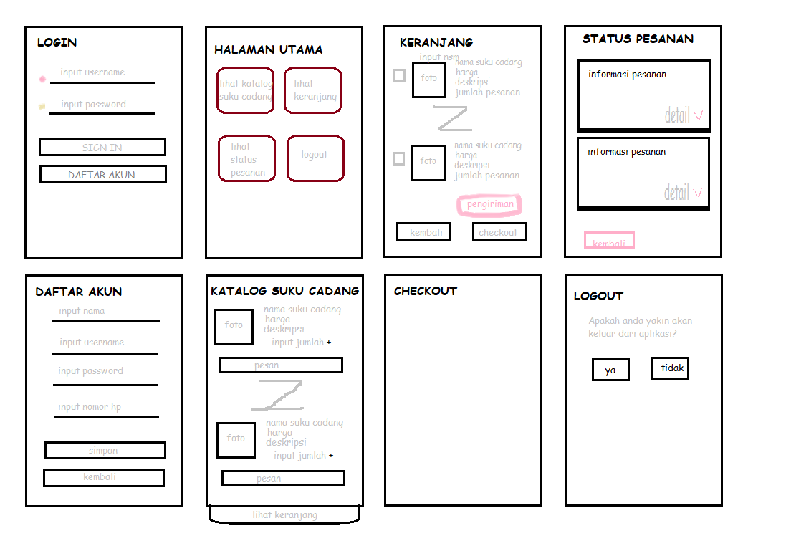

Rabu, 28 April 2021
Hasil Menyadur :
- Untuk kehadiran pertemuan ini dan seterusnya dengan membuat readme.md yang isinya nim, nama, dan kelompok. Untuk nilai tugas seperti biasa menyadur di index.html
- Usecase diagram untuk menggambarkan hubungan/yang dilakukan aktor di sistem, menggambarkan fungsi-fungsi di sistem.
- Aktor merupakan pengguna sistem atau biasa disebut user. Aktor pada usecase diagram bisa 1 atau lebih. Ada Aktor aktif biasa digambarkan disebelah kiri, aktor aktif yang menggunakan sistem/langsung berhubungan dengan sistem) dan
Ada Aktor pasif biasa digambarkan di sebelah kanan (jika aktor aktif membutuhkan inputan secara langsung/manual).
- Usecase tidak menjelaskan secara detail, namun hanya gambaran singkat mengenai hubungan antara aktor, usecase, dan sistem.
- Pada Usecase terdapat include dan exclude.
- Include-disertakan, dimana usecase satu berhubungan dengan usecase lainnya (tidak dapat berdiri sendiri/mempengaruhi usecase lain sehingga harus dipenuhi dulu baru berjalan)
Gambar panah kearah yang usecase yang diperlukan. Misal : pada usecase login, untuk mengelola pinjaman/anggota maka user harus login dahulu.
- Exclude -berkelanjutkan, dapat berdiri sendiri tanpa usecase lainnya, merupakan pengembangan dari usecase inti sehingga gambar panah ke arah usecase inti.
Misalnya: usecase validasi user, yang pengembangannya bisa dengan username dan password, sidik jari, retina (opsional dapat dipilih).
- Generalisasi (rincian/pecahan usecase) dari sebuah usecase ringkasan. Misalnya: usecase mengelola (ringkasan) cukup mewakili kegiatan tambah, ubah, hapus, dsb. (rincian)
- Selain menggambar usecase, kita juga akan membuat deskripsi usecase (no, nama usecase, deskripsi usecase), setiap usecase diagram dilengkapi skenario usecase.
- Skenario normal, dimana berjalan normal tanpa ada kesalahan (berjalan sebagaimana mestinya)
- Skenario Alternatif, dimana berjalan apabila pada skenarion normal terjadi kesalahan
- INGAT
- Setiap usecase akan menjadi satu rancangan layar dan memiliki satu sequence diagram
- Generalisasi umumnya tidak dilakukan, mengingat usecase bukan menggambarkan secara mendetail
- Deskripsi usecase dan skenario usecase merupakan satu paket yang dibuat sebagai tabel deskripsi usecase
Hasil Latihan :
Rancangan Layar

Untuk Usecase diagram konsumen dan deskripsi usecasenya bisa dilihat disini .